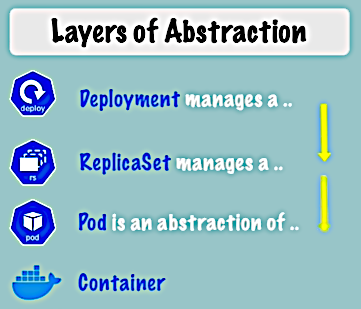
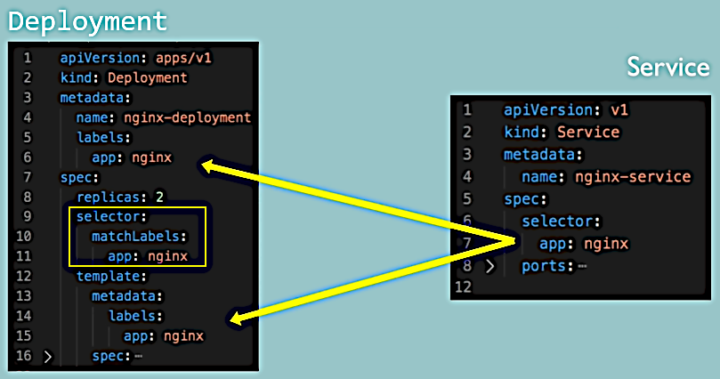
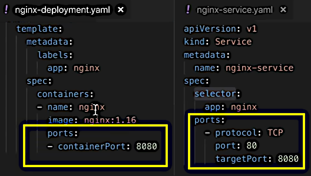
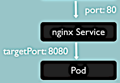

YAML Configuration file
YAML Configuration file
YAML Configuration file
See nginx-deployment.yaml and nginx-service.yaml.
kind: Deployment and kind: Service show what we are going to create.
matadata:spec:). It is specific to the kind of the component.status: — automatically generated and added by K8s. This is how K8s
continuously tracks the desired and the actual states and makes decides about the
self-healing.The status information is held in the etcd.
If we specify and apply spec/replicas: 2 but actual is:
$ kubectl get deployment nginx-deployment -o yaml | less
. . .
apiVersion: apps/v1
kind: Deployment
metadata:
. . .
name: nginx-deployment
. . .
status:
availableReplicas: 1
. . .Then K8s will see the problem and will try to create a new replica ASAP.
YAML (a recursive acronym for "YAML Ain't Markup Language"): Wikipedia | Official site.
It's a good practice to store configuration files the code (see IAAC, Infrastructure As Code, concept).
template)
Whenever we want to create a Pod we create a Deployment and K8s takes care of the rest.
See nginx-deployment.yaml,
spec/template:. The template also has its metadata and specification. So it's a configuration file
inside a configuration file. The latter configuration applies to a Pod, so it is the blueprint
for a Pod.
This is done using labels and selectors. Also see K8s documentation Labels and Selectors.

See nginx-deployment.yaml and nginx-service.yaml.


So the Service will accept requests on the port 80 and forwards them the the to port 8080
of the Pod.
Placing the YAML files into the working accessible directory and applying them:
$ kubectl apply -f nginx-deployment.yaml
deployment.apps/nginx-deployment unchanged
$ kubectl apply -f nginx-service.yaml
service/nginx-service createdNow getting more detailed information about the Pods:
$ kubectl get pods -o wide
NAME READY STATUS RESTARTS AGE IP NODE NOMINATED NODE READINESS GATES
nginx-deployment-f4b7bbcbc-6kbgw 1/1 Running 0 30h 172.17.0.5 minikube <none> <none>
nginx-deployment-f4b7bbcbc-gpffv 1/1 Running 0 31h 172.17.0.6 minikube <none> <none>Two pods as we have replicas: 2. Looking at the service:
$ kubectl get services
NAME TYPE CLUSTER-IP EXTERNAL-IP PORT(S) AGE
kubernetes ClusterIP 10.96.0.1 <none> 443/TCP 2d1h
nginx-service ClusterIP 10.110.173.246 <none> 80/TCP 117s
$ kubectl describe service nginx-service
Name: nginx-service
. . .
Selector: app=nginx
. . .
TargetPort: 8080/TCP
Endpoints: 172.17.0.5:8080,172.17.0.6:8080
. . .Now let's look at the status (that is automatically generated):
$ kubectl get deployment nginx-deployment -o yaml > nginx-deployment-result.yaml
$ less nginx-deployment-result.yamlThis automatically generated configuration contains a lot of runtime data. So if we want to create a blueprint out of it then we need to clean it much.
We can delete the components using configuration files:
$ kubectl delete -f nginx-deployment.yaml
deployment.apps "nginx-deployment" deleted
$ kubectl delete -f nginx-service.yaml
service "nginx-service" deleted